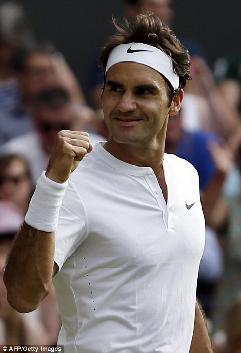

Grand Slam Champions 2003-2024
W ciągu ostatnich dwóch dekad tenis męski obfitował w niezapomniane momenty. Roger Federer, Rafael Nadal i Novak Djokovic stworzyli erę dominacji, zdobywając łącznie 66 z 87 rozegranych w tym czasie turniejów wielkoszlemowych przesuwając kolejne granice i bijąc kolejne rekordy.